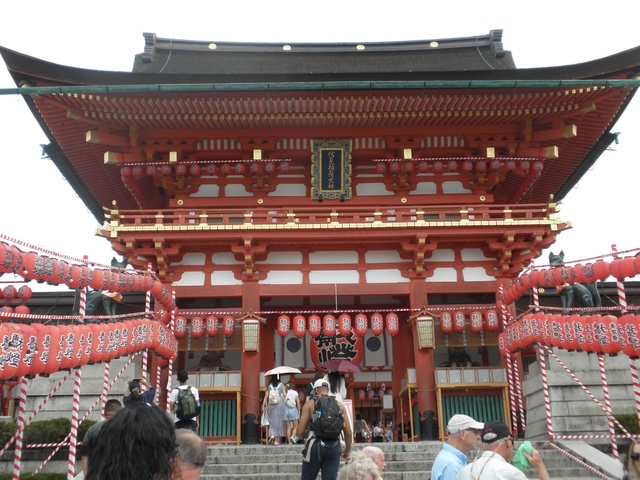
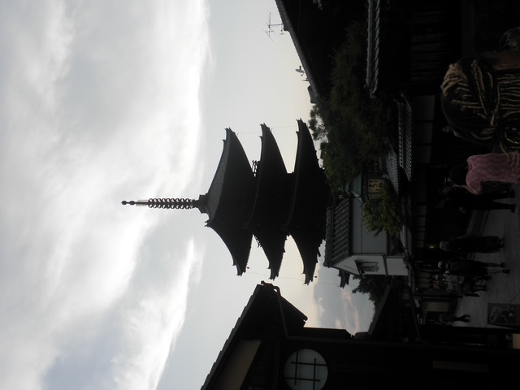
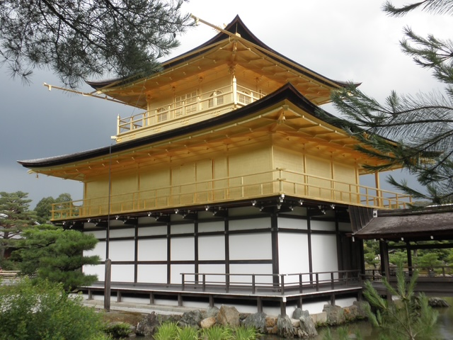
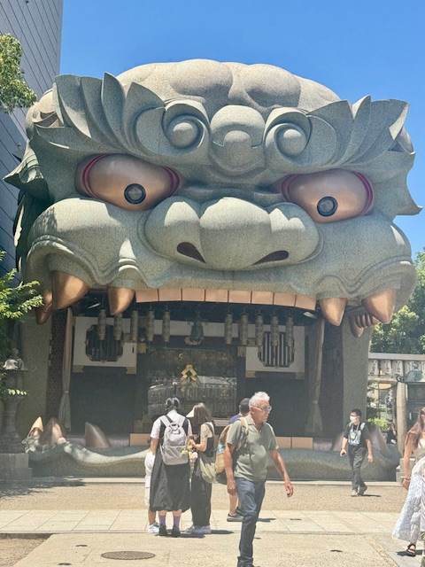
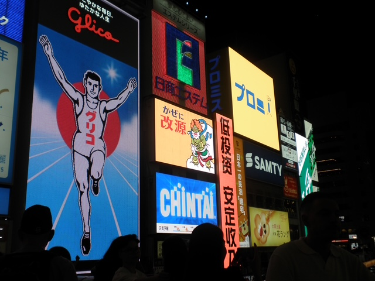
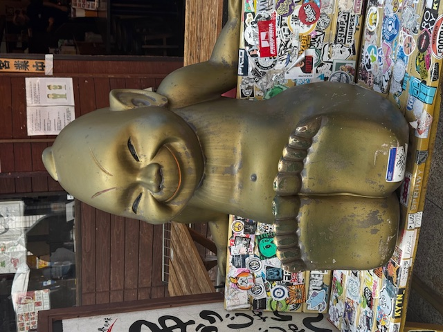
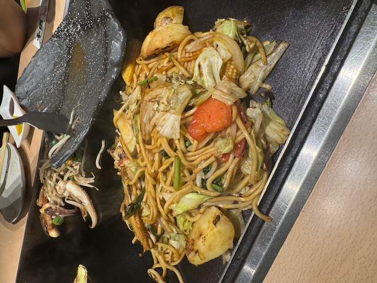

Trip Highlights
-



Discovering Kyoto
We began our trip in Kyoto by visiting the beautiful Yasaka Shrine, one of the city's most famous landmarks. From there, we walked through the traditional streets of Gion, where the wooden buildings, narrow pathways, and hanging lanterns reflected the atmosphere of old Japan. We also visited the Golden Pavilion, also known as Kinkaku-ji, which looked especially beautiful beside the surrounding pond. Kyoto's peaceful atmosphere, cultural landmarks, and traditional architecture made it an unforgettable beginning to our journey.
-



Exploring Osaka
After Kyoto, we travelled to Osaka and explored some of the city's most famous attractions. We visited Namba Yasaka Shrine, which is known for its enormous lion-shaped stage, and later saw the iconic Glico sign in the lively Dotonbori area. We also visited Osaka Castle and explored the energetic streets around the city. Osaka's bright lights, busy shopping areas, and modern atmosphere created a fun contrast to Kyoto's calm and traditional character.
-



Billiken, Food & Memories
During our visit to Osaka's Shinsekai district, we saw the famous Billiken statue, a well-known symbol of good luck. Billiken is associated with the phrase "What ought to be, will be," which gives the statue a hopeful and meaningful message. We also enjoyed Osaka-style okonomiyaki and spent quality time together while exploring the city. Trying local food, discovering unique landmarks, and sharing the experience with my friends made the trip even more memorable.